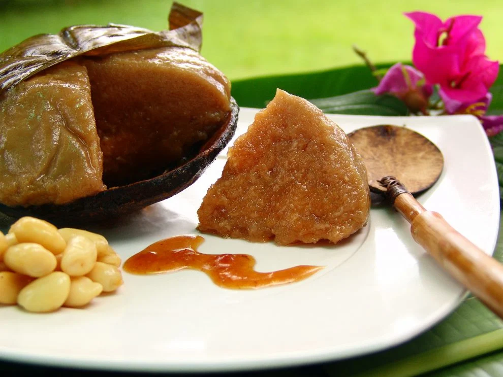

A unique delicacy from Leyte, Binagol is a sweet treat that captures the rich flavors and traditions of the region. Made from mashed taro (locally known as gabi), coconut milk, sugar, and egg yolks, this dessert is traditionally served in a coconut shell, giving it both a distinct taste and an eye-catching presentation.

Binagol originates from the town of Carigara in Leyte and has become one of the province’s most well-known delicacies. Its smooth, custard-like texture and rich sweetness make it a favorite among both locals and visitors. The use of coconut shell as a container not only adds to its traditional appeal but also enhances its aroma and flavor, making the experience of eating Binagol truly unique.
Often enjoyed as a snack or dessert, Binagol is commonly sold in local markets and roadside stalls. It is also a popular souvenir item due to its distinctive packaging. Beyond its taste, the delicacy reflects the resourcefulness and culinary creativity of the people of Leyte, combining simple ingredients into something memorable and culturally significant.

Binagol is made primarily from taro (gabi), coconut milk, sugar, and egg yolks.
It is traditionally served inside a coconut shell, which enhances its flavor and presentation.
Binagol has a smooth, custard-like texture similar to pudding.